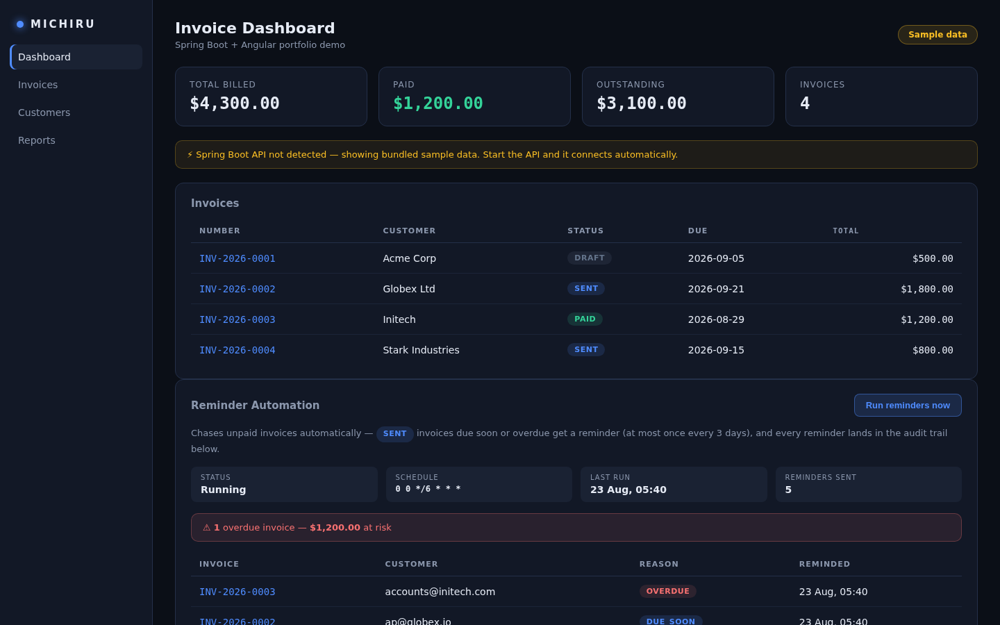

A Spring Boot API that tracks every invoice through a real state machine and chases the
ones that are due or overdue, and an Angular dashboard that shows the invoices and the audit
trail of every reminder sent. It answers a small problem that keeps happening: invoices go
out, then get forgotten.
API completeClient not yet hosted
In plain terms: Overdue invoices get chased automatically so nothing is forgotten — and every reminder that went out is recorded.
The API is complete and its 17 tests pass — invoice creation, the state machine, the reminder
cycle and the error responses are all covered. The dashboard is built but not tested, and
neither half is hosted, so there is no live address to open yet.
Both repositories default to the main branch. The API runs on port
8080 with the database recreated on every start, so a local run begins empty; the dashboard's
build output is not committed, so a clone has to build it before anything is served. There is
no demo address, and none is implied here.
Architecture
Two processes and one database
Angular dashboard :4200
| /api/* (dev proxy -> :8081)
v
Spring Boot API :8080
| InvoiceController /api/invoices
| AutomationController /api/automation/*
| RemindersController /api/reminders
| scheduled reminder cycle
v
H2 in-memory (recreated on every start)
On API failure it serves bundled sample data,
behind a "Sample data" pill.
API: Java 21, Spring Boot 4.1.1, Spring WebMVC, Spring Data JPA, Bean Validation and
Actuator, H2 in memory, Maven with the wrapper, JUnit 5 with MockMvc. Dashboard: Angular
22.1, TypeScript 6.0, RxJS 7.8, standalone components, signals, plain CSS with custom
properties.
An invoice, in order
Creating an invoice assigns it a generated number and the status DRAFT, and saves its line items.
A status update passes through one explicit switch: DRAFT to SENT or CANCELLED, SENT to PAID or CANCELLED. End states are terminal, and an illegal move is rejected.
A scheduled job loads the invoices that are in the SENT state — only those, because a draft is not yet billable and a paid or cancelled invoice is finished.
Each one is classified: past its due date it is overdue; within the configured reminder window before the due date it is due soon; otherwise it is skipped this cycle.
A no-nagging check reads the most recent reminder for that invoice and skips it if one was sent within the configured gap.
The reminder is persisted as a record with the invoice, the customer address, the reason, the timestamp and the channel.
Automation counters are updated, and the same cycle can be triggered on demand instead of waiting for the schedule.
The dashboard fetches the invoice page plus automation status and reminders together, then computes its totals and the audit table from those signals.
Key decisions
An explicit invoice state machine. One switch decides which transitions are legal, and end states stay terminal. There is no way to move an invoice backwards by accident.
Totals are derived, never stored. The invoice total and each line amount are computed from the line items at read time with exact decimal arithmetic, so a stored total cannot drift away from the lines it is supposed to summarise.
A paid invoice cannot be deleted. The delete path refuses, and the shared error handler turns that into a conflict response.
Only billable invoices are chased. The engine queries the SENT state specifically, so nothing reminds a customer about a draft or an invoice that is already settled.
A no-nagging rule. At most one reminder per invoice per three days, enforced by reading the most recent reminder record rather than by a separate flag.
Every reminder is a record. The audit trail is a first-class part of the product, exposed through its own endpoint, not a log line.
One error shape everywhere. A single advice class returns the same JSON structure for validation, not-found, conflict and server errors, with field-level messages for validation failures.
Typed contracts and a visible fallback. The dashboard's TypeScript models mirror the API, async state is held in signals, and when the API is unreachable the dashboard serves bundled sample data behind a visible pill. Deliberately, the run-reminders action has no such fallback, because an action with side effects must not appear to succeed when it failed.
Verified metrics
Counted from the source, the test methods and the build reports
Metric
Value
API tests, all passing
17
Documented endpoints (nine mappings plus health)
10
JPA entities
3
Data transfer objects
7
Repositories
2
Controllers
3
API main Java files
25
API test files
5
Lines of main Java code
945
Dashboard source files
20
Lines of TypeScript, HTML and CSS
920
Tracked files in the API repository
41
The 17 tests are counted from the test methods and confirmed by the build reports as 17 run,
0 failures, 0 errors, 0 skipped. The API repository's 41 tracked files include a multi-stage
Dockerfile. No test figure is given for the dashboard, which has no working tests.
Screenshots
Captured from the built dashboard served locally, with the API not running — so the banner and the "Sample data" pill are doing their job. The dashboard uses a dark theme, which is a deliberate contrast with the light surface used across the rest of this site.

Totals, the invoice table, and the reminder engine's audit trail — with the sample-data fallback clearly labelled.